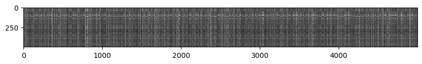
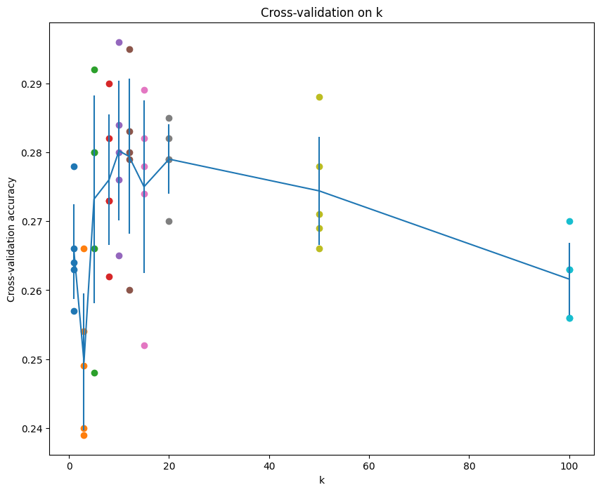

cs231n assignment1
作业要求
准备工作
在 google drive 上连接 colab，可以看官网作业链接中的视频进行配置
KNN
实验只选取了num_training=5000, num_test=500 进行测试
- 首先扁平化数据：一共有
X_train.shape[0]张图片，压成行向量X_train=np.reshape(X_train, (X_train.shape[0], -1)) - 训练阶段：KNN 只用记住数据
- 预测阶段：为每个测试数据，找到前 k 个近邻
双循环计算距离
实验需要实现 cs231n/classifiers/k_nearest_neighbor.py 下的 compute_distances_two_loops 函数
进入该函数，需要计算一个(num_test, num_train) 大小的矩阵，对第 i 个测试数据，计算和第 j 个数据的距离
dists[i][j] = np.sqrt(np.sum(np.square(X[i,:]-self.X_train[j,:])))Inline Question 1
Notice the structured patterns in the distance matrix, where some rows or columns are visibly brighter. (Note that with the default color scheme black indicates low distances while white indicates high distances.)
What in the data is the cause behind the distinctly bright rows?
What causes the columns?

- 训练集中没有出现类似的测试数据
- 测试数据中没有出现类似的数据
寻找 k 近邻
实现 predict_labels 函数，为第 i 个测试数据找到 k 近邻，提示：numpy.argsort
numpy.argsort(a, axis, kind, order)：
- a：排序的数组
- axis：排序的轴
- kind：排序算法
- order：排序字段
- 返回的是排序后的索引数组，a[index] 得到排序结果
找到近邻后，根据 k 近邻进行投票，得到预测标签：
可以先利用 numpy.bincount 对数据进行统计，然后用 numpy.argmax 得到出现次数最多的标签的索引
numpy.bincount(x, weights, minlength):
- x：输入数组
- weights：和 x 大小一样的权重数组
- minlength：最小的 bins 数
y_pred[i] = np.argmax(np.bincount(closest_y))Inline Question 2
当使用 L1 距离时，对在图片 位置 处的像素 ,
the mean across all pixels over all images is
And the pixel-wise mean across all images is
The general standard deviation and pixel-wise standard deviation is defined similarly.
以下哪些选项不会改变使用 L1 距离的分类器，其中训练数据和测试数据都会用相同的方式进行预处理。
- Subtracting the mean (.)
- Subtracting the per pixel mean (.)
- Subtracting the mean and dividing by the standard deviation .
- Subtracting the pixel-wise mean and dividing by the pixel-wise standard deviation .
- Rotating the coordinate axes of the data, which means rotating all the images by the same angle. Empty regions in the image caused by rotation are padded with a same pixel value and no interpolation is performed.
如果均值和标准差的计算是整个分布的话，那应该是123
进行了 123 中的预处理后，计算 L1 距离，由于可以抵消减的部分，或者可以提共同的因子，对 L1 距离没什么影响，不想打公式了。4 没法提公共部分，5 显然是错的。
向量化的方式计算距离
向量化的计算中一个比较重要的就是 numpy 中的广播机制，可以参考文档 广播（Broadcasting）|Numpy
广播的前提是，每一个维度，长度要么是 1 要么相等，如果没有这个维度，则用 1 扩展。
-
单循环的方式进行计算：
要计算第 i 个测试图片和所有的训练图片的距离，相当于对第 i 行的数据进行了广播dists[i] = np.sqrt(np.sum(np.square(X[i]-self.X_train), axis=1)) -
纯向量化的方式进行计算：
可以用
np.sum(np.square(X), axis=1)来计算， 可以用np.sum(X*self.X_train.T)注意 numpy 中的乘法：multiply 是逐元素乘法；dot 和 @ 是矩阵乘法，相加的时候需要广播，
np.reshape(np.sum(np.square(X), axis=1), [num_test, 1]最后的结果是
Two loop version took 49.975469 seconds One loop version took 64.176358 seconds No loop version took 0.817401 seconds可以看到时间优化是很大的
交叉验证
将训练集分成 num_folds 份，可以使用 numpy.array_split 实现
numpy.array_split(ary, indices_or_sections, axis=0)
对每个候选的 k，运行 KNN 算法 num_folds 次
每一次中，将不是验证集的其他组拼接在一起，使用 numpy.concatenate
numpy.concatenate((a1,a2,...), axis=0, out=None, dtype=None, casting="same_kind")
knn = KNearestNeighbor()
for k in k_choices:
for i in range(num_folds):
train = np.concatenate([fold for idx, fold in enumerate(X_train_folds) if idx!=i])
labels = np.concatenate([fold for idx, fold in enumerate(y_train_folds) if idx!=i])
knn.train(train, labels)
predict_labels = knn.predict(X_train_folds[i], k=k)
acc = np.sum(predict_labels==y_train_folds[i]) / y_train_folds[i].shape[0]
k_to_accuracies[k] = []
k_to_accuracies[k].append(acc)最后画出的图像为：

可以看到第五个 k 效果比较好，即 k=10
Inline Question 3
- The decision boundary of the k-NN classifier is linear.
错误 - The training error of a 1-NN will always be lower than or equal to that of 5-NN.
正确，1-NN 的训练误差是 0 - The test error of a 1-NN will always be lower than that of a 5-NN.
错误，取决于数据集 - The time needed to classify a test example with the k-NN classifier grows with the size of the training set.
正确，训练集变大，需要计算距离和比较的时间就更长
SVM
如果权重 ，图片 每张图片的损失函数为 ，最终损失函数为 ，这里取 ，因此